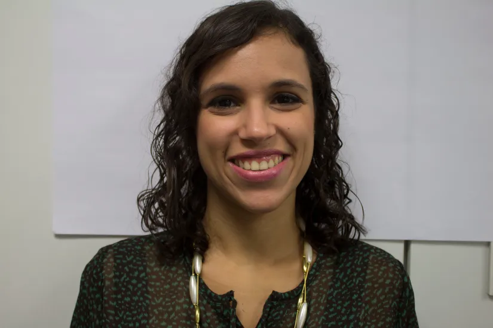
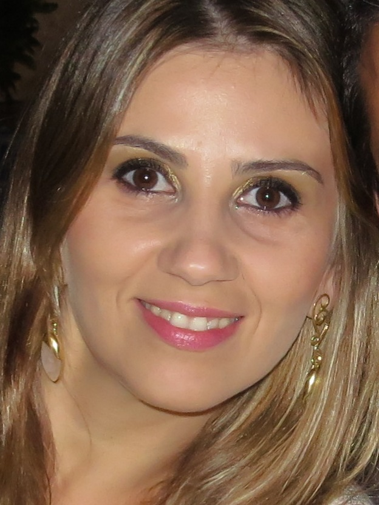
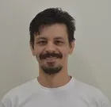
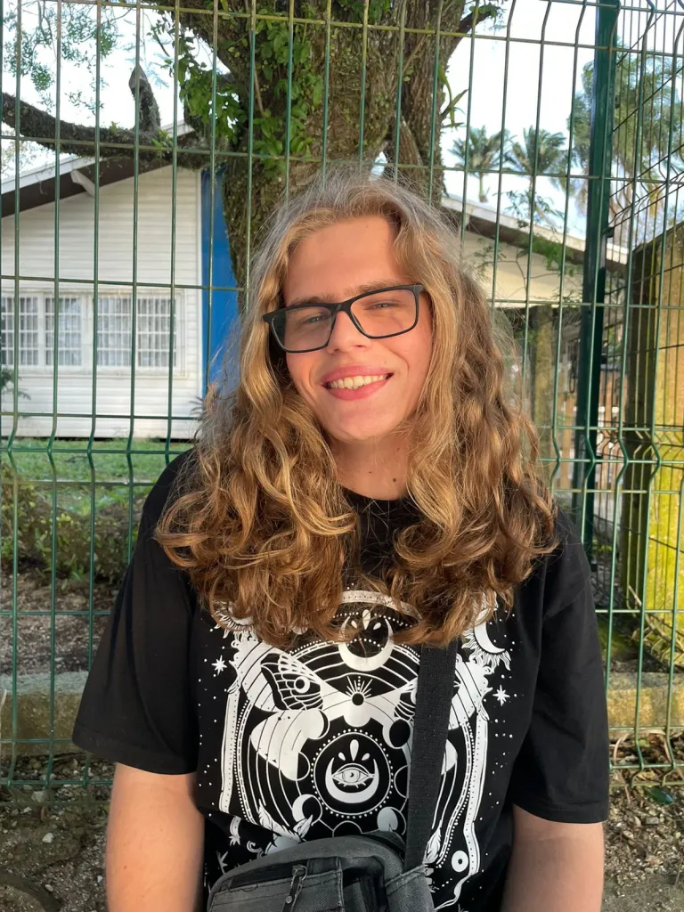
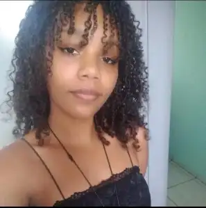
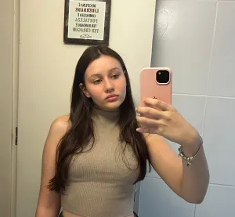
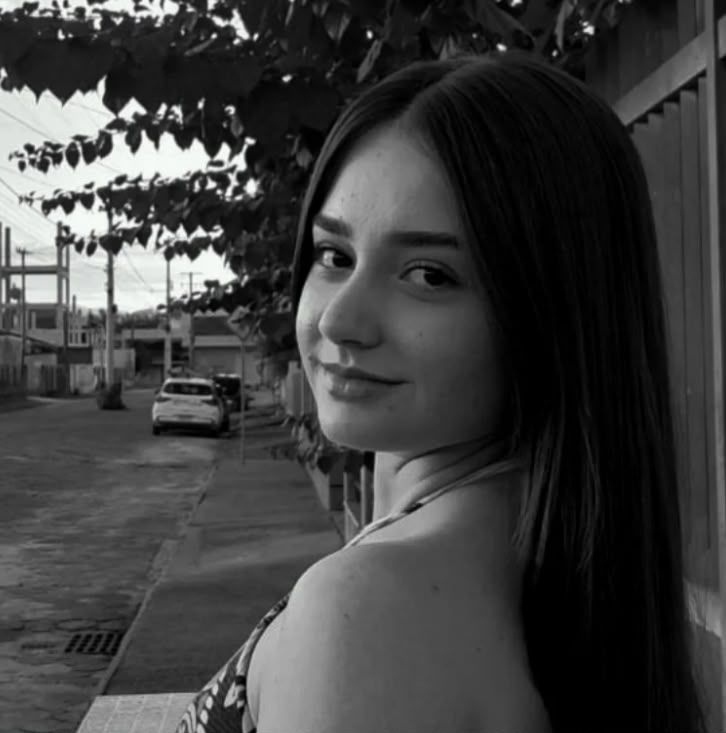

Nossa Equipe
Conheça os pesquisadores e bolsistas que fazem parte do projeto Elas Digitais do IFSC Campus Gaspar.
Pesquisadores

Caroline Reis V. S. Rauta
Docente de Língua Portuguesa
Caroline Reis Vieira Santos Rauta é professora de Língua Portuguesa do Instituto Federal de Santa Catarina no Campus Gaspar. Caroline é doutora em Estudos da Tradução pela Universidade Federal de Santa Catarina e realizou período de Doutorado Sanduíche no Exterior na Universidade de Birmingham (Reino Unido) entre os meses de agosto e novembro de 2012. Caroline é mestre em Estudos da Tradução (2010) (Bolsista REUNI de Assistência ao Ensino) pela Universidade Federal de Santa Catarina e possui graduação em Língua e Literatura Vernáculas pela mesma universidade (2007) (Bolsista FINEP2005-2006/PIBIC-CNPq 2006-2007).

Daniela Sbizera Justo
Docente e coordenadora do Curso Superior de Tecnologia em Análise e Desenvolvimento de Sistemas
Daniela é docente e coordenadora do Curso Superior de Tecnologia em Análise e Desenvolvimento de Sistemas do Instituto Federal de Santa Catarina no Campus Gaspar. Possui graduação (1999) e mestrado (2003) em CIÊNCIAS DA COMPUTAÇÃO pela UNIVERSIDADE DE SÃO PAULO – USP, campus de São Carlos/SP. É doutora (2016) em Engenharia Elétrica pela UNIVERSIDADE ESTADUAL PAULISTA – UNESP, campus de Ilha Solteira/SP, junto ao SINTEL (grupo de pesquisa sobre Sistemas Inteligentes). Tem experiência na área de Ciência da Computação com ênfase em BANCO DE DADOS e ENGENHARIA DE SOFTWARE, tendo atuado como coordenadora em instituição privada e como professora do ensino superior público e privado. Atua, também, em análise e desenvolvimento de sistemas e como DBA Oracle e SQL Server. Tem grande interesse nas áreas de BANCO DE DADOS, ENGENHARIA DE SOFTWARE E APRENDIZADO DE MÁQUINA

Maykon Chagas de Souza
Docente de Informática
Maykon é docente de informática do Instituto Federal de Santa Catarina no Campus Gaspar. Possui mestrado em Computação Aplicada pela Universidade do Vale do Itajaí (UNIVALI) e graduação em Computação pelo Claretiano Centro Universitário e em Sistemas de Telecomunicações pelo Instituto Federal de Educação, Ciência e Tecnologia de Santa Catarina (IFSC). Tem experiência na área de Ciência da Computação e Redes de Computadores atuando nas seguintes áreas: Redes de Computadores, Segurança de Sistemas, Administração de Sistemas GNU/Linux, Sistemas de Gestão de Identidades Federadas, Sistemas Distribuídos e Princípios de Telecomunicações.
Bolsistas

Joana Gonçalves Cardoso
Estudante do curso técnico em Informática
Bolsista do programa Elas Digitais, Joana como mulher atuante na área de tecnologia, está interessada em participar desta pesquisa por acreditar na importância de visibilizar a trajetória das mulheres nesse campo. Acredita que sua participação pode contribuir para identificar as principais barreiras que impedem o avanço das mulheres em cargos de liderança e fomentar a criação de iniciativas que promovam a igualdade de gênero no setor.

Natan João Vansuita
Estudante do curso técnico em Informática
Bolsista do programa Elas Digitais, Natan como aliado da comunidade LGBTQIA+, acredita profundamente na importância da diversidade nos espaços tecnológicos. Ao participar deste projeto, busca compreender melhor os desafios e as oportunidades que as mulheres enfrentam nesse campo, com o objetivo de contribuir para a construção

Jaqueline Correia Brandão
Estudante do curso técnico em Informática
Jaqueline possui formação no curso FIC-PROEJA em Auxiliar Administrativo. Bolsista do programa Elas Digitais, Jaqueline busca contribuir para a participação e empoderamento feminino na área da tecnologia, estimulando o interesse e a participação ativa de garotas que se interessem na área da informática e ciência da computação.

Maria Clara Adão
Estudante do curso técnico em Informática
Bolsista do programa Elas Digitais, Maria entrou para o projeto em busca da divulgação de referências femininas nas áreas das STEAMs devido a falta da figura da mulher no campo da tecnologia. Busca contribuir para o e empoderamento feminino na área, estimulando o interesse e a participação ativa de garotas que se interessem pela área da informática e ciência da computação.

Thaynara Pastore Tadioto
Estudante do curso técnico em Química
Bolsista do projeto Elas Digitais, Thaynara acredita na importância da participação feminina nas áreas de ciência, tecnologia e inovação. Interessada em contribuir para a valorização e visibilidade das mulheres nesses espaços, busca compreender e discutir os desafios enfrentados por meninas e mulheres nas áreas das STEAMs, incentivando a participação feminina e contribuindo para a construção de ambientes mais inclusivos e igualitários na educação e no mercado de trabalho.